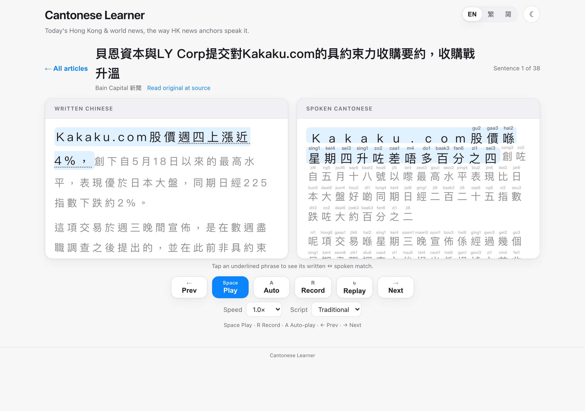
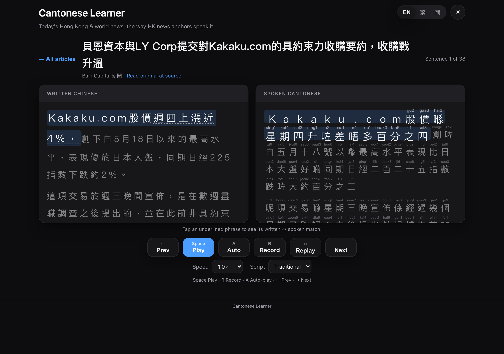
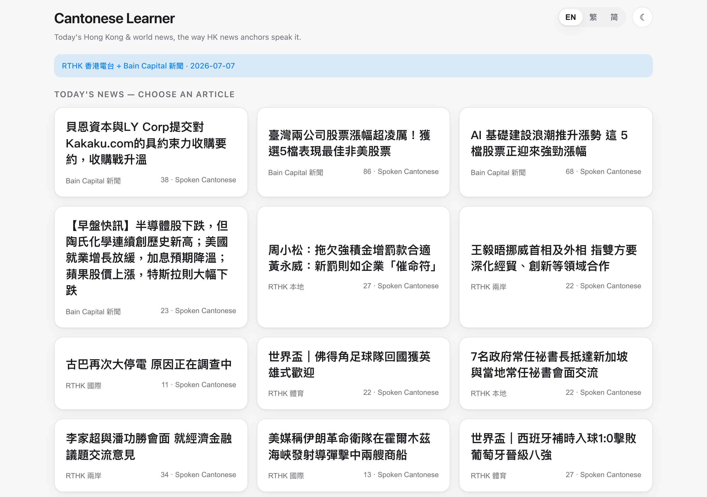
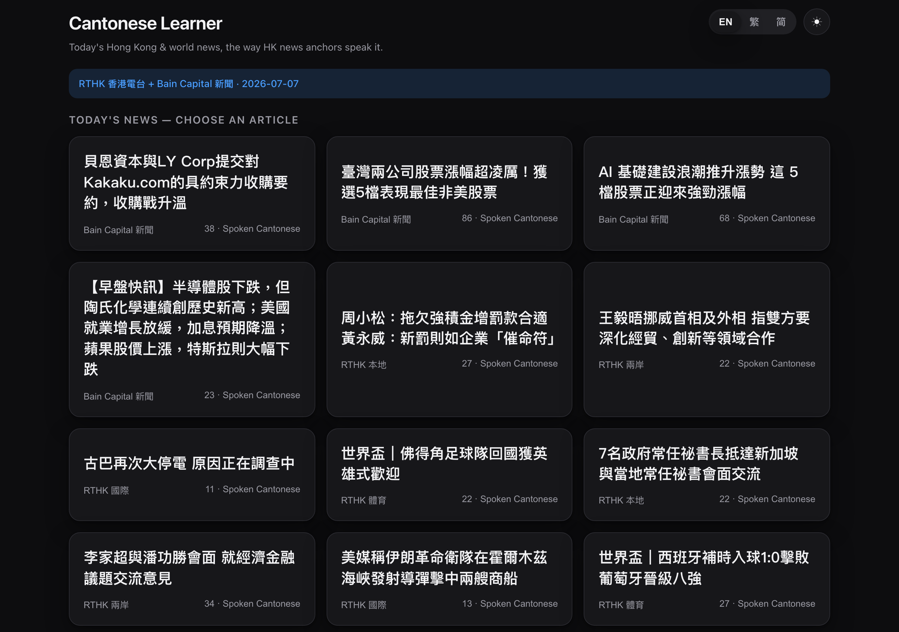

2020年 → 二零二零年
A year, read digit by digit.
Written Chinese and spoken Cantonese are not the same language.
Every day this pulls a fresh batch of real RTHK news, rewrites each story the way a Hong Kong TV anchor would say it out loud, prints jyutping above every character, reads it to you in a real neural voice, and grades you character by character when you read it back. V2 adds 96 everyday scenario dialogues, numbers you can finally pronounce, and a tap-to-compare view that shows exactly which written phrase became which spoken one.

scenario dialogues across 8 categories, 982 lines, from cha chaan teng ordering to due diligence calls.
An LLM rewrite plus an independent review pass hunting the exact errors rule converters make. Both free.
No sign-up, no install, no API key. Runs on GitHub's free model inference.
spelled out in context: 2020年 → 二零二零年, but 2020個 → 二千零二十個.
Start · the problem
You can read a Hong Kong newspaper competently and still not understand the evening news, because written Chinese and spoken Cantonese diverge in vocabulary, grammar and register. 認為 on the page becomes 覺得 in the mouth. The textbook teaches the first and the city speaks the second.
So this app puts both on screen at once and makes the mapping between them the thing you study, rather than something you are expected to absorb.
↓ V2's best idea
The rewrite now emits aligned phrase pairs. Tap any underlined phrase in either pane and its counterpart highlights in the other, so you can see precisely that 認為 became 覺得 rather than squinting at two paragraphs and inferring it.
On a phone the two stacked panes are replaced by an interleaved view: each written line sits directly above its spoken version, so there is nothing to scroll between.

↓ the quality problem, and the fix
The hard part of this app is that mechanical written-to-spoken conversion produces confident nonsense. Single-character substitution rules turn 不足 into 唔足 and 其他 into 其佢 — plausible-looking, wrong, and invisible to a learner who cannot yet tell.
So every sentence goes through an LLM rewrite and then a second, independent review pass that specifically hunts for that class of error. The last-resort rule converter was itself rebuilt after a two-reviewer audit, replacing risky single-character swaps with phrase whitelists, and quoted names are never touched.
All of this runs at zero cost on GitHub's free model
inference. Adding an ANTHROPIC_API_KEY upgrades both passes to
Claude with semantically aligned phrase pairs and a green "cross-checked"
banner, so you can see which tier produced what you are reading.
A converter that is wrong 5% of the time is worse than no converter, because the learner has no way to know which 5%.
Why there are two passes and a whitelist↓ numbers
In V1, Arabic numerals had no jyutping and no reliable reading — a real hole, because news is full of them. V2 spells every number out the way an anchor reads it in context:
A year, read digit by digit.
The same digits as a quantity, read as a cardinal.
Percentages spelled out in full.
Phone numbers, the way anyone would actually say one.
Every one of those characters gets jyutping, the voice reads it correctly, and saying the number right scores green.
↓ the curriculum
Alongside the news sit 96 scenario dialogues in 8 categories of 12: eating and drinking (cha chaan teng, dim sum, hotpot, splitting the bill), getting around (taxi, MTR, minibus, Star Ferry, the tram), shopping (wet market, Ladies' Market bargaining, returns), friends and small talk, office life, finance and deals, home and services, and health and weather.
Every line has speaker labels, an English gloss, neural audio with a distinct voice per speaker, and the same listen → speak → grade loop as the news. The content was written and then cross-checked by independent reviewers for naturalness and real-Hong-Kong accuracy.


↓ smaller things
Press A and the whole article plays hands-free, sentence by
sentence — a podcast mode for shadowing or passive listening, which any manual
action stops. Pre-synthesised neural Cantonese means a real anchor voice
rather than the browser's robot, with a pitch-preserving speed control; the
browser voice is only an offline fallback.
The build also reserves slots for a second news source alongside RTHK: a WeChat 公眾號 RSS bridge when configured, or with zero setup a scrape of fresh Chinese-language coverage of a specific firm, so the vocabulary you practise is the vocabulary your colleagues use.
↓ what you should know before relying on it
The speaking and scoring feature needs Chrome. Other browsers can listen and read but cannot grade you, which is a browser API limitation rather than a choice.
More importantly: the spoken Cantonese is machine-generated and machine-reviewed. Two independent passes and a rebuilt rule converter cut the error rate a great deal, and they do not make it zero. This is a practice tool, not an authority — if something reads oddly to you, trust the instinct.
Because it pulls today's news, the content changes daily and nothing is archived. That is the point for a news reader and worth knowing if you wanted to come back to a specific story.
Finish · what it is built on
ANTHROPIC_API_KEY moves both passes to Claude with aligned phrase pairs